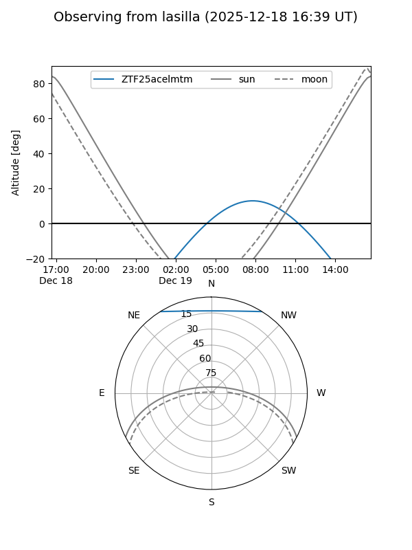
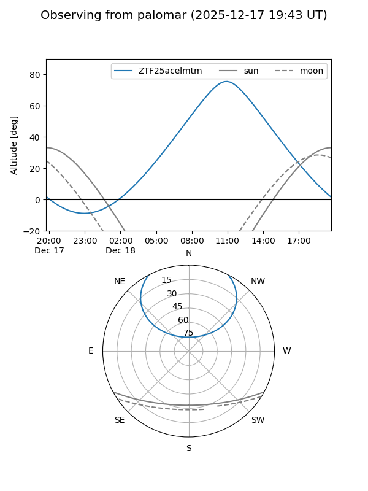

ZTF25acelmtm
Target ZTF25acelmtm at 2025-12-18 11:17
Aliases and brokers:
FINK: fink-portal.org/ZTF25acelmtm
Lasair: lasair-ztf.lsst.ac.uk/objects/ZTF25acelmtm
ALeRCE: alerce.online/object/ZTF25acelmtm
alt names
ZTF25acelmtm (ztf,fink_ztf)
Coordinates:
equatorial (ra, dec) = 133.6861,+47.87827
equatorial (HMS+DMS) = 08:54:44.66,+47:52:41.77
galactic (l, b) = (171.7773,+40.09827)
Photometry
last ztfg=20.24
2 ztfg detections
Lightcurve

Visibility


Additional plots